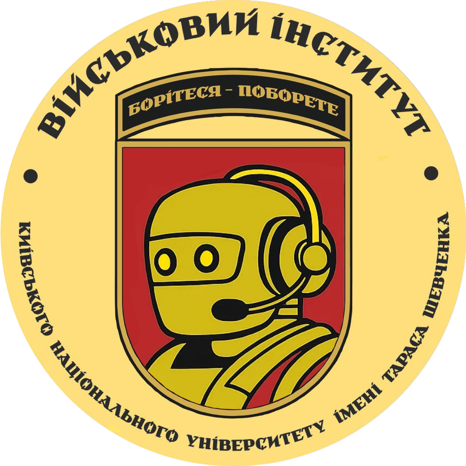

Контакти
Телефони
Приймальна комісія, денна форма:
+38(050)145-62-76
+38(093)257-70-37
+38(044)481-44-86
Приймальна комісія, військова кафедра:
+38(044)521-35-57
Черговий Військового інституту (цілодобово):
+38(044)521-32-89
Адреса
03189, Київ, вул. Юлії Здановської, 81
Загальні питання:
viknu@univ.kiev.ua
Вступнику:
abiturient_viknu@ukr.net
Чат-бот ВІКНУ
Щодо будь-яких питань зі вступу, функціональних обов'язків та внутрішніх процесів інституту звертайтесь до нашого бота

Дистанційне навчання

Курси підвищення кваліфікації та професійної військової освіти
(КПК, КПВО)
Платформа дистанційного навчання для курсантів та слухачів
Соціальні мережі
TikTok | Facebook | Instagram | YouTube
Молодший лейтенант запасу
Довідку про присвоєння первинного офіцерського звання "молодший лейтенант запасу" необхідно замовити за номером телефону +38(044)521-32-89 (дод. 61-08) з понеділка по четвер. Видача довідок здійснюється у середу наступного тижня з 09.00 до 12.30 та з 13.30 до 17.00 (кім, 201). Для отримання довідки необхідно прибути особисто.При собі необхідно мати паспорт і приписне свідоцтво